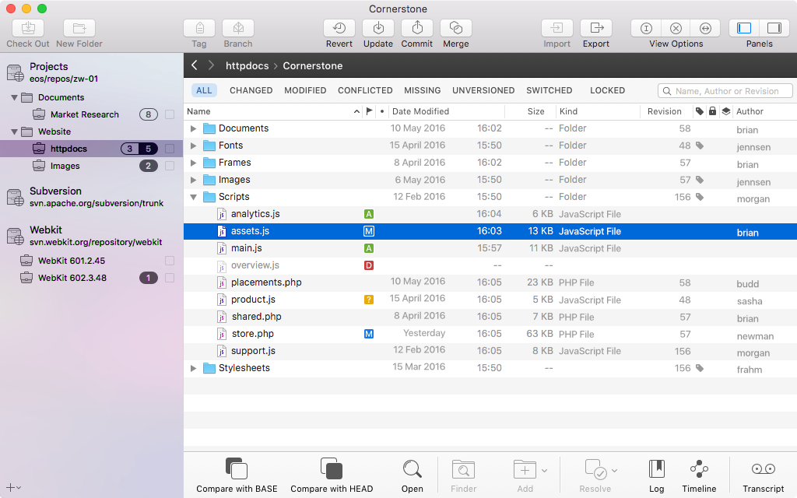
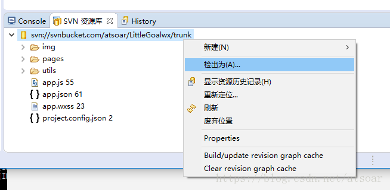
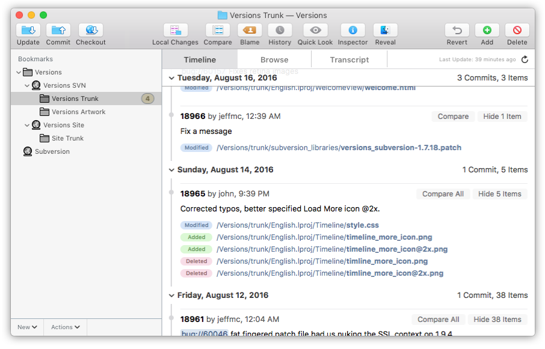

svn客户端下载
2021年3月30日
svn的客户端有很多，不同平台也有不同的客户端，本篇介绍 svn 的各种客户端，包括 Windows、Mac、Linux，提供 svn 客户端下载地址
TortoiseSVN
也叫乌龟SVN，是当前 Windows 上首选的 SVN 客户端，它提供了右键菜单，直接目录上不同图标显示同步状态，非常方便，提供中文语言包，可以汉化。
官网下载 | 第三方下载 | 视频教程安装和汉化 | 文字教程安装和汉化 | 汉化包下载
CornerStone
Mac 上比较流行的 SVN 客户端，收费的软件，不过网上也找得到一些破解版本，界面上操作比较类似 Windows 的图形界面，比较易用，功能丰富
官网地址 | 使用教程

SmartSVN
支持 Mac/Windows/Linux ，提供免费版(难得)，专业版收费，功能强大，Mac/Linux 用户必备
官网地址
Subclipse
这个是 Eclipse 上用的一个插件，方便你直接在里面使用 SVN 操作，如果你是使用 Eclipse，可以试下。
最新版本插件地址：https://subclipse.github.io/updates/（Eclipse安装插件那里填写地址）
安装教程，你也可以直接在 Eclipse 的商店里直接安装

Versions
Mac 上比较流行的 SVN 客户端，收费软件，也很好用，功能丰富，破解版需要自己找
官网地址

VisualSVN
这个是 Visual Studio 上用的一个 SVN 插件，方便你直接在IDE里面使用SVN，用这个的前提是你还得安装 TortoiseSVN ，个人觉得不如直接用 TortoiseSVN
官网下载